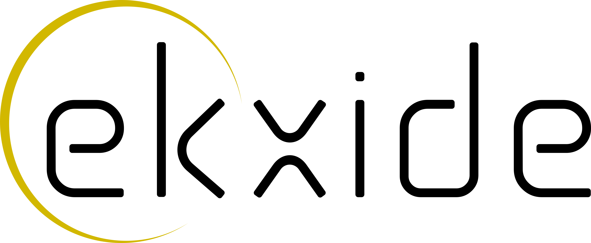

The iceoryx2 Book#  Welcome to the iceoryx2 book! Brought to you with ♡ by the developers at ekxide IO. User Manual Introduction Getting Started Quickstart A Robot Nervous System Fundamentals Layered Architecture Shared Memory Communication Model Messaging Patterns Execution Control Cross-Language Support Gateways and Tunnels Glossary API Reference Overview Rust Python C++ C